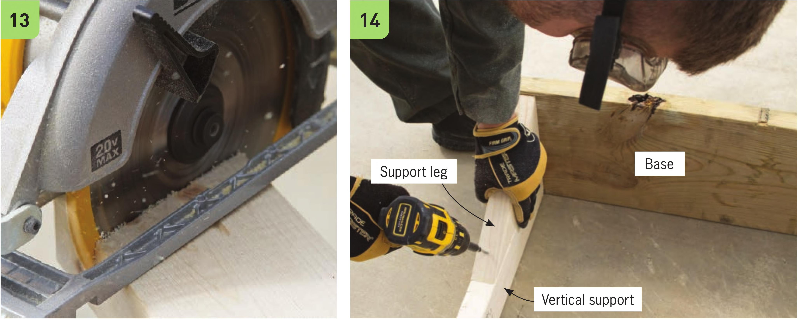
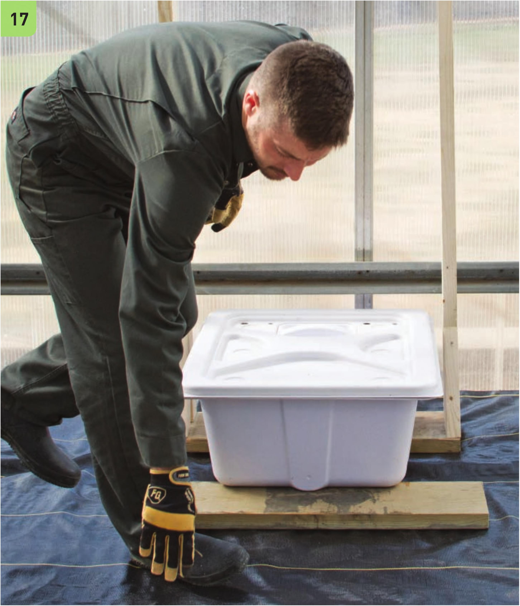

13 Cut the angle support legs. 14 Secure the support legs to the base using two screws. Secure the support legs to the vertical supports with one screw. 15 Set up the frame in a level area. Check that the base and top crossbeam are level and square. 16 Position the reservoir in the frame. 17 Level the reservoir by moving the second 30" 2x10" board under the front of the reservoir. HYDROPONIC GROWING SYSTEMS 125

